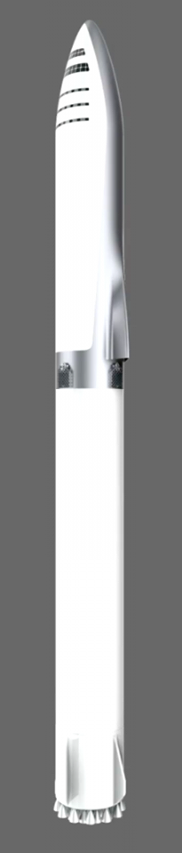
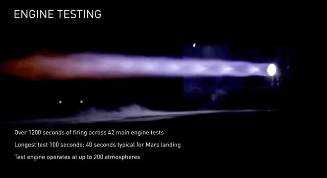

BFR - Big Falcon Rocket
BFR:
A Big Falcon Rocket lehet a világ első Saturn V –osztályú rakétája, ami képes eljutni más bolygókra, és vissza. A legfontosabb jellemzője, hogy 100%-ban újra felhasználható! Két fokozatból áll, és a rakéta esetében már mindkettő képes lesz újra földet érni használat után.
Űrhajó:Az űrhajónak többféle koncepciója van. Egyformán használható föld körüli utazásra és bolygóközire is. Tervbe van véve a gyártása, utánpótlás/automata folyamatok végrehajtására alkalmas típusnak, és ember szállítására alkalmas változat is. Erre azért van szükség, mert egyrészt nincs szükség minden küldetéshez emberre az űrben, másrészt nem küldhetünk távoli bolygókra embereket elegendő – korábban említett - felszerelés nélkül. Használatával a bolygó egyik pontjáról a másikra „repülhetünk” kevesebb, mint 30 perc alatt, továbbá hatalmas (a hagyományosnál jelentősen nagyobb) műholdak vagy űrállomásrészek felvitelére is képes lesz. Magát az űrhajó visszatérését 4 db raptor hajtómű teszi lehetővé. Ezek mellé, kerül még 3 db tengerszinten üzemelő hajtómű a landolás segítéséhez. A Mars utazáshoz elkészült koncepció alapján a hajót először földkörüli pályára állítja a gyorsító, majd visszatér a földre és feltankolás után fellőnek vele egy másik hajót, egy tankerhajót, ami feltankolja a már keringő utasszállítót, felkészítve így az utazásra a Marsig. Ami érdekes benne, hogy már el is kezdtek gyártani egy prototípust, így a tervek szerint 5-10 éven belül akár a Marsra is eljuthat. Gyorsító: (Booster)Bár maga az rakéta, jelentősen kisebb, mint a korábbi tervekben, mégis megfoghatatlanul hatalmas, és erős. 31 db Raptor hajtómű hajtaná, a korábbi 42 helyett, ami még így is hatalmas erőt képvisel a piacon, mivel a Raptor, a jelenleg tesztelés alatt lévő legerősebb hajtómű. A Rakéta 106 méter magas és 9 méter átmérőjű lenne, ami bőven meghaladja a Saturn V méreteit, nem beszélve az újrahasználhatóságról. Képes lesz a saját tömegével együtt 4400 tonnát a levegőbe emelni. Ez megközelítőleg 150 tonna rakományt jelent. Létezik feláldozható üzemmód, amivel 250 tonna hasznos rakományt lehetne megemelni. (bár véleményem szerint ahhoz túlontúl drága lenne ez a rakéta) A Gyorsító érdekessége, hogy minden idök legerősebb rakétája lenne, ami visszatérés után hamar újra felhasználhatóvá is válna, akár egy újabb feladathoz. |
 |
||||||||||||||||||||||||
|
 |